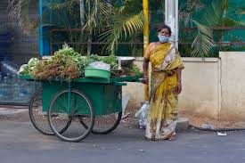
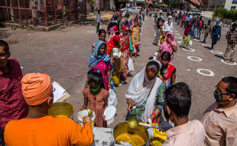
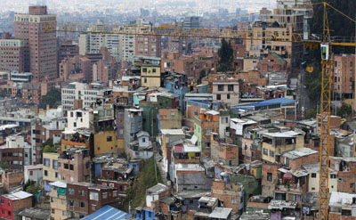
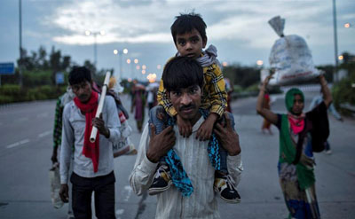

The poor live primarily in rural areas. While this could minimize their exposure to the disease, it also means they have limited access to health services. Moreover, since rural households tend to depend more on domestic remittances from urban migrants, economic shutdowns in urban areas will hurt them too. The poor in urban areas, on the other hand, live in congested settlements with low-quality services, which would significantly increase their risk of being infected by the contagion. Disruptions in food markets could be more severe in urban areas.
The poor work largely in the agriculture and service sectors and are usually self-employed or informally employed, mainly in micro and family enterprises. Those employed in the informal service sector in urban areas are likely to bear the most severe initial impacts. In addition, many of the vulnerable non-poor, who are increasingly employed in the gig economy, particularly in middle-income countries, will also be at risk of slipping into poverty. Those engaged in agriculture may be able to cope, at least initially, with potential disruptions to food supplies or price spikes, but are likely to be affected by a decline in demand in urban areas over time.
|  |
| Poor woman selling vegetables during the pandemic |
In the immediate term, limited access to high-quality and affordable health services can have devastating impacts in the event of an illness in the family, while school closures can lead to a decline in food intake among children of poor families who rely on school feeding programs. In the long term, the impacts of lost months of schooling, early childhood interventions, health check-ups, and nutrition can be particularly high for children in poor families, adversely affecting their human capital development and earning potential.
|  |
| Servants feeding the poor |
This, in the absence of adequate safety nets, can force the poor to rely on coping strategies with potential long-lasting negative effects, such as the sale of productive assets or diminished investments in human capital.
|  |
| Slum are the most vulnerable during a pandemic |
|  |
| Migrant workers going back to their village |
| Home | Index |